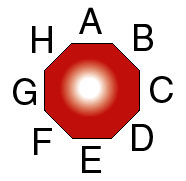
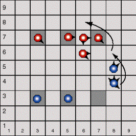

![[SGF FF[4] - Smart Game Format]](images/head.gif)
OCTI is a registered trademark, patent pending, all rights reserved. OCTI is distributed by the Great American Trading Company. For sales information, call (800)225-7449 or visit www.octi.net
For more information about this specification contact Tim Prime, tdprime@acm.org.
A quick note about colours. SGF uses black and white. When transcribing games with other colours (perhaps blue and red), Black should be the player who played first.
Points are designated with numbers, ranging from 11 (south-west corner) to 99 (north-east). The first digit refers to the horizontal coordinate. The second digit refers to the vertical. 
A "stone" is a pod and its prongs. The pod is identified by the
point where it is located. Prongs are designated with letters. "A"
faces north, "B" faces northeast, and so on through "H".
For example, 46CD.
Prong information may be omitted as long as the all pods in that
stack have identical designations. This is always true for stacks of
exactly one pod.
To bring a new pod onto the board, simply list its new location.
For example, 73. It is assumed that a captured pod is
liberated if legal, otherwise a reserve pod is used.
To add a prong to a pod, list the stone, a plus sign (+), and
the letter of the new prong. For example, 33+B places a
northeast prong on the pod at point 33. (Superprongs are denoted with a
"!", e.g., 33+B!.)
To reposition a prong so that it faces north, write 33+A-B.

Moves are indicated by listing the stone, a dash, and the destination
point. Multiple jumps are done in a similar way; inserting a dash and a
point for each intermediate step. For example, in the diagram at right,
the piece at 84 moves as follows: 84-86-68.
To indicate a capture, specify an "x" in the destination point
immediately after the capture. In the example at right, the Blue
pod could capture the piece at 77. Record this move
84-86-68x. If Blue instead wishes to capture its own pod,
record 84-86x-68.
On rare occasions, only a select set of pods is to be captured
from a jumped stack. List each captured pod with an "x", and
its prong designation. Augmenting the previous example a little,
84-86-68xDxAB.
To move one or more pieces in a stack, list the moves for each pod
separated by a comma. To designate each pod, list its location and
prong positions. For example, the move illustrated below would be
recorded 46CD-56,46D-55.
Index of the defined properties by type:
game-info:BO, NP,
NR, NS, RU,
WO
markup: AS, CS,
MS, SS, TS
setup: RP
First, a clarification of the RU property, as it applies to Octi.
Property: RU (rules)
Propvalue: simpletext
Propertytype: game-info
Function: Valid values are one major variation ("full", "fast",
or "kids") followed by a colon and a comma separated
elist of variations ("edgeless", "superprong", etc.).
The colon may be omitted if either side is empty.
The default is 2-player full, no variations.
The 4-player game is not currently available.
Octi has special points, called "octi squares". The rules (RU[]) and the size (SZ[]) can infer default locations for these points. However, it seems that a certain amount of flexibility is in order.
Property: BO (black octisquares) Propvalue: list of point Propertytype: game-info Function: The position of Black's octi squares. Black will be setup with one empty pod on each of these points. It is illegal to list the same point twice. Traditionally, Black sits at the south end of the board. Related: WO Property: WO (white octisquares) Propvalue: list of point Propertytype: game-info Function: The position of White's octi squares. White will be setup with one empty pod on each of these points. It is illegal to list the same point twice. Traditionally, White sits at the north end of the board. Related: BO
The number of pods and prongs also is adjustable.
Property: NP (number of prongs) Propvalue: number Propertytype: game-info Function: This is the number of prongs each players has at the start of the game. The default will be derived from the rules. Related: NR Property: NR (number of reserve) Propvalue: number Propertytype: game-info Function: This is the number of pods in each players reserve at the start of the game. The default will be derived from the rules. Related: NP, NS Property: NS (number of superprongs) Propvalue: number Propertytype: game-info Function: This is the number of superprongs each players has at the start of the game. The default will be derived from the rules. Related: NR
A lot of the original markup properties don't completely apply to stacked pieces. For Octi new "stone" marking properties are proposed. These are similar to their point-centric brethren which should mark all "stones" in a stack.
Like the markup they are derived from, it is illegal to have more than one of CS, MS, SS, or TS properties on the same stone.
Multiple identical stones, same location and prong configuration, are ambiguous. While this was fine for movement, it present some trickiness for markup. Ambiguous stones shall refer to exactly one instance of the stone. The viewer may choose how this is laid out.
To mark two ambiguous stones, use the same stone twice. For example,
CS[46CD][46CD]SS[46CD] would markup three identical stones;
two with circles, one with a square. Be sure you do not specify more
stones of a given type than the number that occupy that point.
Property: AS (arrow stone) Propvalue: list of composed stone ':' point Propertytype: - Function: Most of the same restriction from AR apply. The same arrow must not occur twice; however, two arrows from different stones at the same point may have arrows to the same destination. Single point arrows are also illegal. Related: AR Property: CS (circle stone) Propvalue: list of stone Propertytype: - Function: Marks the given stones, each with a circle. Related: CR Property: MS (mark stone) Propvalue: list of stone Propertytype: - Function: Marks the given stones, each with an ex. Related: MA Property: SS (square stone) Propvalue: list of stone Propertytype: - Function: Marks the given stones, each with a square. Related: SQ Property: TS (triangle stone) Propvalue: list of stone Propertytype: - Function: Marks the given stones, each with a triangle. Related: TR
In a similar way, AddEmpty is a touch point-centric.
Property: RP (remove pod) Propvalue: list of stone Propertytype: setup Function: Removes a stone from the board. More selective than AddEmpty. Related: AE